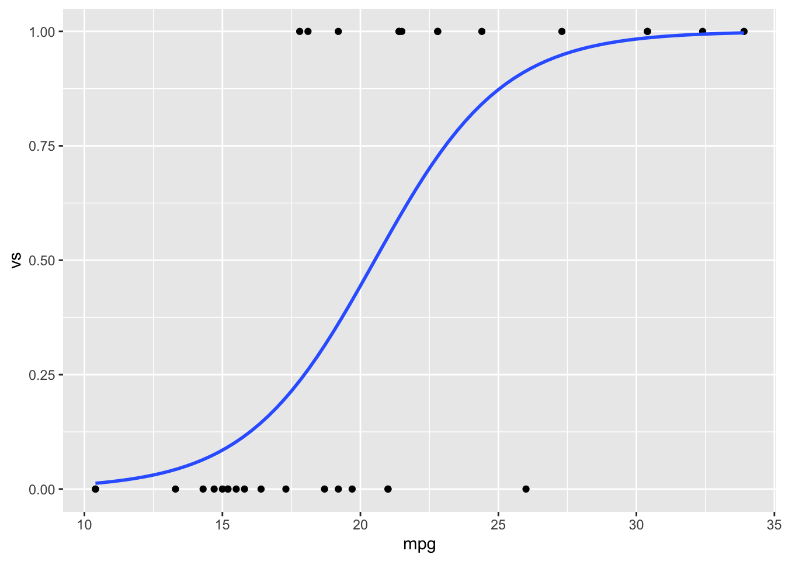
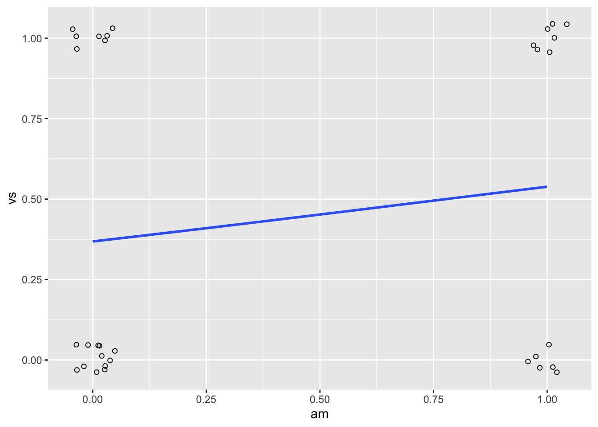

第 7 章 统计分析
7.1 回归和相关分析
7.1.1 问题
你想要做线性回归或相关分析。
7.1.2 方案
要处理的一些样例数据：
# 制造一些数据 X 增加（大的干扰噪声） Z 缓慢增加 构建
# Y，它与 X 变量负相关，与 X*Z 变量正相关
set.seed(955)
xvar <- 1:20 + rnorm(20, sd = 3)
zvar <- 1:20/4 + rnorm(20, sd = 2)
yvar <- -2 * xvar + xvar * zvar/5 + 3 + rnorm(20, sd = 4)
# 通过组合已创建的向量来构建数据框
dat <- data.frame(x = xvar, y = yvar, z = zvar)
# 展示前 6 行
head(dat)
#> x y z
#> 1 -4.252 4.586 1.89877
#> 2 1.702 -4.903 -0.82937
#> 3 4.323 -4.308 -1.31283
#> 4 1.781 0.205 -0.28479
#> 5 11.537 -29.767 -1.27304
#> 6 6.672 -10.146 -0.094597.1.2.1 相关系数
# 相关系数 - 默认使用 pearson 方法
cor(dat$x, dat$y)
#> [1] -0.76957.1.2.2 相关矩阵（多个变量）
同时可以对多个变量进行两两相关性分析，结果是一个 nxn 的平方矩阵或是数据框。
# 变量之间的相关矩阵
cor(dat)
#> x y z
#> x 1.0000 -0.769538 0.491699
#> y -0.7695 1.000000 0.004172
#> z 0.4917 0.004172 1.000000
# 保留两位小数点
round(cor(dat), 2)
#> x y z
#> x 1.00 -0.77 0.49
#> y -0.77 1.00 0.00
#> z 0.49 0.00 1.007.1.2.3 线性回归
线性回归，当 dat$x 是预测变量时，dat$y 为响应变量。这可以使用一个数据框的两列，或者是直接使用数值向量。
# 下面两个命令会显示一样的结果
fit <- lm(y ~ x, data = dat) # 使用数据框的 x 列和 y 列
fit <- lm(dat$y ~ dat$x) # 使用 dat$x 和 dat$y 进行拟合
fit
#>
#> Call:
#> lm(formula = dat$y ~ dat$x)
#>
#> Coefficients:
#> (Intercept) dat$x
#> -0.228 -1.183
# 这说明预测 y = -0.2278 - 1.1829*x 获取更详细的信息
summary(fit)
#>
#> Call:
#> lm(formula = dat$y ~ dat$x)
#>
#> Residuals:
#> Min 1Q Median 3Q Max
#> -15.892 -2.511 0.287 4.465 9.329
#>
#> Coefficients:
#> Estimate Std. Error t value Pr(>|t|)
#> (Intercept) -0.228 2.632 -0.09 0.93
#> dat$x -1.183 0.231 -5.11 7.3e-05 ***
#> ---
#> Signif. codes:
#> 0 '***' 0.001 '**' 0.01 '*' 0.05 '.' 0.1 ' ' 1
#>
#> Residual standard error: 6.51 on 18 degrees of freedom
#> Multiple R-squared: 0.592, Adjusted R-squared: 0.57
#> F-statistic: 26.1 on 1 and 18 DF, p-value: 7.28e-057.1.2.4 多个预测变量的线性回归（多元线性回归）
使用 y 作为线性回归的响应变量，x 和 z 作为预测变量。
注意下面的公式没有检测 x 与 z 之间的交互效应。
# 这些都有相同的结果
fit2 <- lm(y ~ x + z, data = dat) # 使用数据框的 x,y,z 列
fit2 <- lm(dat$y ~ dat$x + dat$z) # 使用向量
fit2
#>
#> Call:
#> lm(formula = dat$y ~ dat$x + dat$z)
#>
#> Coefficients:
#> (Intercept) dat$x dat$z
#> -1.38 -1.56 1.86
summary(fit2)
#>
#> Call:
#> lm(formula = dat$y ~ dat$x + dat$z)
#>
#> Residuals:
#> Min 1Q Median 3Q Max
#> -7.97 -3.19 -1.21 3.85 7.52
#>
#> Coefficients:
#> Estimate Std. Error t value Pr(>|t|)
#> (Intercept) -1.382 1.988 -0.70 0.4964
#> dat$x -1.564 0.198 -7.88 4.5e-07 ***
#> dat$z 1.858 0.475 3.91 0.0011 **
#> ---
#> Signif. codes:
#> 0 '***' 0.001 '**' 0.01 '*' 0.05 '.' 0.1 ' ' 1
#>
#> Residual standard error: 4.86 on 17 degrees of freedom
#> Multiple R-squared: 0.785, Adjusted R-squared: 0.76
#> F-statistic: 31.1 on 2 and 17 DF, p-value: 2.1e-067.1.2.4.1 交互效应
如何合适地构建多元线性回归并且检验交互效应非常复杂，这里不作讲述。这里我们仅仅用 x 和 z 变量以及它们之间的交互效应拟合模型。
想要构建 x 与 z 之间的交互效应模型，需要添加 x:z 项。我们也可以使用公式 x*z 来代表 x+z+x:z 。
# 下面两个公式等效
fit3 <- lm(y ~ x * z, data = dat)
fit3 <- lm(y ~ x + z + x:z, data = dat)
fit3
#>
#> Call:
#> lm(formula = y ~ x + z + x:z, data = dat)
#>
#> Coefficients:
#> (Intercept) x z x:z
#> 2.282 -2.131 -0.107 0.208
summary(fit3)
#>
#> Call:
#> lm(formula = y ~ x + z + x:z, data = dat)
#>
#> Residuals:
#> Min 1Q Median 3Q Max
#> -5.305 -3.600 0.393 2.138 8.396
#>
#> Coefficients:
#> Estimate Std. Error t value Pr(>|t|)
#> (Intercept) 2.2820 2.2006 1.04 0.315
#> x -2.1311 0.2741 -7.78 8e-07 ***
#> z -0.1068 0.8482 -0.13 0.901
#> x:z 0.2081 0.0787 2.64 0.018 *
#> ---
#> Signif. codes:
#> 0 '***' 0.001 '**' 0.01 '*' 0.05 '.' 0.1 ' ' 1
#>
#> Residual standard error: 4.18 on 16 degrees of freedom
#> Multiple R-squared: 0.85, Adjusted R-squared: 0.822
#> F-statistic: 30.3 on 3 and 16 DF, p-value: 7.76e-077.2 t 检验
7.2.1 问题
你想要检验来自两个总体的样本是否有不同的均值（显著性差异），或者检验从一个总体抽取的样本均值和理论均值有显著性差异。
7.2.2 方案
7.2.2.1 样本数据
我们将使用内置的 sleep 数据集。
sleep
#> extra group ID
#> 1 0.7 1 1
#> 2 -1.6 1 2
#> 3 -0.2 1 3
#> 4 -1.2 1 4
#> 5 -0.1 1 5
#> 6 3.4 1 6
#> 7 3.7 1 7
#> 8 0.8 1 8
#> 9 0.0 1 9
#> 10 2.0 1 10
#> 11 1.9 2 1
#> 12 0.8 2 2
#> 13 1.1 2 3
#> 14 0.1 2 4
#> 15 -0.1 2 5
#> 16 4.4 2 6
#> 17 5.5 2 7
#> 18 1.6 2 8
#> 19 4.6 2 9
#> 20 3.4 2 10我们将制造 sleep 数据的宽格式版本；下面我们将看看如何处理长格式和宽格式的数据。
sleep_wide <- data.frame(ID = 1:10, group1 = sleep$extra[1:10],
group2 = sleep$extra[11:20])
sleep_wide
#> ID group1 group2
#> 1 1 0.7 1.9
#> 2 2 -1.6 0.8
#> 3 3 -0.2 1.1
#> 4 4 -1.2 0.1
#> 5 5 -0.1 -0.1
#> 6 6 3.4 4.4
#> 7 7 3.7 5.5
#> 8 8 0.8 1.6
#> 9 9 0.0 4.6
#> 10 10 2.0 3.47.2.2.2 比较两组：独立双样本 t 检验
假设有两组独立样本（我们这里忽略ID变量）。
t.test() 函数能够操作像 sleep 这样的长格式数据——一列记录测量值，一列指定组别；或者操作两个单独的向量。
# Welch t 检验
t.test(extra ~ group, sleep)
#>
#> Welch Two Sample t-test
#>
#> data: extra by group
#> t = -1.9, df = 18, p-value = 0.08
#> alternative hypothesis: true difference in means is not equal to 0
#> 95 percent confidence interval:
#> -3.3655 0.2055
#> sample estimates:
#> mean in group 1 mean in group 2
#> 0.75 2.33
# 2 个独立的向量
t.test(sleep_wide$group1, sleep_wide$group2)
#>
#> Welch Two Sample t-test
#>
#> data: sleep_wide$group1 and sleep_wide$group2
#> t = -1.9, df = 18, p-value = 0.08
#> alternative hypothesis: true difference in means is not equal to 0
#> 95 percent confidence interval:
#> -3.3655 0.2055
#> sample estimates:
#> mean of x mean of y
#> 0.75 2.33默认，t 检验不假设有方差齐性（或称作方差同质）。默认的不是 Student t 检验而是使用了 Welch t 检验。注意 Welch t 检验结果中 df=17.776，这是因为对不同质方差进行了校正。要使用 Student t 检验的话，设置 var.equal=TRUE 。
# Student t 检验
t.test(extra ~ group, sleep, var.equal = TRUE)
#>
#> Two Sample t-test
#>
#> data: extra by group
#> t = -1.9, df = 18, p-value = 0.08
#> alternative hypothesis: true difference in means is not equal to 0
#> 95 percent confidence interval:
#> -3.3639 0.2039
#> sample estimates:
#> mean in group 1 mean in group 2
#> 0.75 2.33
# 针对宽数据相同的操作 (2个分离的向量)
t.test(sleep_wide$group1, sleep_wide$group2, var.equal = TRUE)
#>
#> Two Sample t-test
#>
#> data: sleep_wide$group1 and sleep_wide$group2
#> t = -1.9, df = 18, p-value = 0.08
#> alternative hypothesis: true difference in means is not equal to 0
#> 95 percent confidence interval:
#> -3.3639 0.2039
#> sample estimates:
#> mean of x mean of y
#> 0.75 2.337.2.2.3 配对样本t检验
你也可以使用配对样本 t 检验比较配对的数据。数据配对是指你可能有对某种药物治疗前后有观测值或者不同治疗有配对的研究对象。
再次说明，t-test() 函数可以用于有分组变量的数据框或者两个向量。它依赖相对位置来决定配对。如果你使用有分组变量的长格式数据，group 1 的第一行与 group 2 的第一行配对。确保数据排序好并且不存在缺失值是非常重要的；否则配对可以丢弃。这种情况中，我们能通过 group 和 ID 变量进行排序来确保顺序是一样的。
# 按 group 和 ID排序
sleep <- sleep[order(sleep$group, sleep$ID), ]
# 配对 t-test
t.test(extra ~ group, sleep, paired = TRUE)
#>
#> Paired t-test
#>
#> data: extra by group
#> t = -4.1, df = 9, p-value = 0.003
#> alternative hypothesis: true difference in means is not equal to 0
#> 95 percent confidence interval:
#> -2.4599 -0.7001
#> sample estimates:
#> mean of the differences
#> -1.58
# 针对宽数据相同的操作 (2个分离的向量)
t.test(sleep_wide$group1, sleep_wide$group2, paired = TRUE)
#>
#> Paired t-test
#>
#> data: sleep_wide$group1 and sleep_wide$group2
#> t = -4.1, df = 9, p-value = 0.003
#> alternative hypothesis: true difference in means is not equal to 0
#> 95 percent confidence interval:
#> -2.4599 -0.7001
#> sample estimates:
#> mean of the differences
#> -1.58配对 t 检验等价于检测是否配对的观察值的总体均值是否为 0 。
t.test(sleep_wide$group1 - sleep_wide$group2, mu = 0, var.equal = TRUE)
#>
#> One Sample t-test
#>
#> data: sleep_wide$group1 - sleep_wide$group2
#> t = -4.1, df = 9, p-value = 0.003
#> alternative hypothesis: true mean is not equal to 0
#> 95 percent confidence interval:
#> -2.4599 -0.7001
#> sample estimates:
#> mean of x
#> -1.587.2.2.4 与期望的总体均值进行比较：单样本 t 检验
假设你想要检测是否 extra 列的数据抽取自总体均值为0的总体（这里忽略 group 与 ID 列）。
t.test(sleep$extra, mu = 0)
#>
#> One Sample t-test
#>
#> data: sleep$extra
#> t = 3.4, df = 19, p-value = 0.003
#> alternative hypothesis: true mean is not equal to 0
#> 95 percent confidence interval:
#> 0.5956 2.4844
#> sample estimates:
#> mean of x
#> 1.547.3 频率检验
7.3.1 问题
你有分类数据然后想要检验是否这些数据值的频数分布是否与预期不符，或者是否组间的频数分布有（显著）差异。
7.3.2 方案
频数检验通常解决两类问题：
- 频数分布与预期或者理论的分布（比如 50% 的 yes，50% 的 no ）符合吗？（拟合优度检验）
- 两组或多组之间的频率分布有差异吗？（独立检验）
通常用于解决这样问题的统计检验方法，分为精确检验与近似检验两种。
| 期望分布 | 比较组别 | |
|---|---|---|
| 精确 | 精确二项检验 | Fisher精确检验 |
| 近似 | 卡方拟合优度 | 独立卡方检验 |
注意：精确二项检验仅能用于有两个水平的单变量。Fisher 精确检验仅能用于二维列联表（比如，当存在一个独立变量和一个非独立变量时它可以使用；但不能用于两个独立变量和一个非独立变量的情况）。
想要检验配对或被试内效应，我们可以使用 McNemar 检验。使用该检验必须满足存在两个水平的独立变量和两个水平的非独立变量。
想要检验有重复测量的两个变量独立性，我们可以使用 Cochran-Mantel-Haenszel 检验。
假设你有下面的数据，其中每一行代表一个记录：
data <- read.table(header = TRUE, text = "
condition result
control 0
control 0
control 0
control 0
treatment 1
control 0
control 0
treatment 0
treatment 1
control 1
treatment 1
treatment 1
treatment 1
treatment 1
treatment 0
control 0
control 1
control 0
control 1
treatment 0
treatment 1
treatment 0
treatment 0
control 0
treatment 1
control 0
control 0
treatment 1
treatment 0
treatment 1
")相比于以记录的数据框存储，你的数据可能是计数的数据框，或者是一个列联表。
7.3.2.1 拟合优度检验 （期望频率）
7.3.2.1.1 卡方检验
想要检验假设：结果列 result（忽略条件 condition ）中的两个值在总体中几乎相等（50% - 50%）。
# 为result列创建列联表，包含 0 和 1 两个值 注意，'0'
# 和 '1' 是列名而不是实际的值
ct <- table(data$result)
ct
#>
#> 0 1
#> 17 13
# 也可以手动创建表格
ct <- matrix(c(17, 13), ncol = 2)
colnames(ct) <- c("0", "1")
# 执行卡方检验
chisq.test(ct)
#>
#> Chi-squared test for given probabilities
#>
#> data: ct
#> X-squared = 0.53, df = 1, p-value = 0.5想要检验有不同期望频率的样本（比如下面一个 0.75，一个 0.25 ）：
# 概率表 —— 和必须为 1
pt <- c(0.75, 0.25)
chisq.test(ct, p = pt)
#>
#> Chi-squared test for given probabilities
#>
#> data: ct
#> X-squared = 5.4, df = 1, p-value = 0.02如果你想要从检验结果中提取信息，可以将结果保存进一个变量，然后用 str() 函数查看变量信息，接着把你想要的部分取出来。例如：
chi_res <- chisq.test(ct, p = pt)
# 查看所有组分
str(chi_res)
#> List of 9
#> $ statistic: Named num 5.38
#> ..- attr(*, "names")= chr "X-squared"
#> $ parameter: Named num 1
#> ..- attr(*, "names")= chr "df"
#> $ p.value : num 0.0204
#> $ method : chr "Chi-squared test for given probabilities"
#> $ data.name: chr "ct"
#> $ observed : num [1:2] 17 13
#> $ expected : num [1:2] 22.5 7.5
#> $ residuals: num [1:2] -1.16 2.01
#> $ stdres : num [1:2] -2.32 2.32
#> - attr(*, "class")= chr "htest"
# 获取卡方值
chi_res$statistic
#> X-squared
#> 5.378
# 获取p值
chi_res$p.value
#> [1] 0.020397.3.2.1.2 精确二项检验
精确二项检验仅能用于存在两个值的单变量数据。
ct <- table(data$result)
ct
#>
#> 0 1
#> 17 13
binom.test(ct, p = 0.5)
#>
#> Exact binomial test
#>
#> data: ct
#> number of successes = 17, number of trials = 30,
#> p-value = 0.6
#> alternative hypothesis: true probability of success is not equal to 0.5
#> 95 percent confidence interval:
#> 0.3743 0.7454
#> sample estimates:
#> probability of success
#> 0.5667
# 使用 75% 的期望概率——注意 1 在第二列，所以只需要令 p
# = 0.25
binom.test(ct, p = 0.25)
#>
#> Exact binomial test
#>
#> data: ct
#> number of successes = 17, number of trials = 30,
#> p-value = 2e-04
#> alternative hypothesis: true probability of success is not equal to 0.25
#> 95 percent confidence interval:
#> 0.3743 0.7454
#> sample estimates:
#> probability of success
#> 0.5667如果你想要从检验结果中提取信息，可以将结果保存进一个变量，然后用 str() 函数查看变量信息，接着把你想要的部分取出来。例如：
bin_res <- binom.test(ct, p = 0.25)
# 字符串格式化后查看信息
str(bin_res)
#> List of 9
#> $ statistic : Named num 17
#> ..- attr(*, "names")= chr "number of successes"
#> $ parameter : Named num 30
#> ..- attr(*, "names")= chr "number of trials"
#> $ p.value : Named num 0.000216
#> ..- attr(*, "names")= chr "0"
#> $ conf.int : num [1:2] 0.374 0.745
#> ..- attr(*, "conf.level")= num 0.95
#> $ estimate : Named num 0.567
#> ..- attr(*, "names")= chr "probability of success"
#> $ null.value : Named num 0.25
#> ..- attr(*, "names")= chr "probability of success"
#> $ alternative: chr "two.sided"
#> $ method : chr "Exact binomial test"
#> $ data.name : chr "ct"
#> - attr(*, "class")= chr "htest"
# 获取 p 值
bin_res$p.value
#> 0
#> 0.0002157
# 获取 95% 置信区间
bin_res$conf.int
#> [1] 0.3743 0.7454
#> attr(,"conf.level")
#> [1] 0.957.3.2.2 独立检验（比较组间）
7.3.2.2.1 卡方检验
想要检验控制和处理组结果的频数差异，使用二维列联表。
ct <- table(data$condition, data$result)
ct
#>
#> 0 1
#> control 11 3
#> treatment 6 10
chisq.test(ct)
#>
#> Pearson's Chi-squared test with Yates'
#> continuity correction
#>
#> data: ct
#> X-squared = 3.6, df = 1, p-value = 0.06
chisq.test(ct, correct = FALSE)
#>
#> Pearson's Chi-squared test
#>
#> data: ct
#> X-squared = 5.1, df = 1, p-value = 0.027.3.2.2.2 Fisher 精确检验
对于小样本而言 Fisher 精确检验更为适合。小样本的 2x2 列表非常典型，样本更多、更复杂的列表计算强度非常大。当然，用R进行比较复杂的计算也是没有太大问题的。
ct <- table(data$condition, data$result)
ct
#>
#> 0 1
#> control 11 3
#> treatment 6 10
fisher.test(ct)
#>
#> Fisher's Exact Test for Count Data
#>
#> data: ct
#> p-value = 0.03
#> alternative hypothesis: true odds ratio is not equal to 1
#> 95 percent confidence interval:
#> 0.9669 45.5550
#> sample estimates:
#> odds ratio
#> 5.7147.3.2.2.3 Cochran-Mantel-Haenszel 检验
Cochran-Mantel-Haenszel 检验 （或称为 Mantel-Haenszel 检验)）用于检验重复测量两离散变量的独立性。通常使用 2x2xK 列表表示，K是测量条件的次数。比如你想要指导是否一个处理（C vs. D）是否影响了恢复的概率（yes or no）。假设该处理一天监控测量三次——早上、中午和晚上，而你想要你的检验能够控制它。那么你可以使用 CMH 检验对 2x2x3 列联表进行操作，第三个变量是你想要控制的变量。
R 中的 CMH 检验可以处理比 2x2xK 维度更高的数据，例如你处理 3x3xK 列联表。
在接下来的例子里有三个变量：Location、Allele 和 Habitat。问题是——当控制 location 变量时，Allel（94 或非 94）和 Habitat（marine 或 estuarine）两个变量是否独立。
fish <- read.table(header = TRUE, text = "
Location Allele Habitat Count
tillamook 94 marine 56
tillamook 94 estuarine 69
tillamook non-94 marine 40
tillamook non-94 estuarine 77
yaquina 94 marine 61
yaquina 94 estuarine 257
yaquina non-94 marine 57
yaquina non-94 estuarine 301
alsea 94 marine 73
alsea 94 estuarine 65
alsea non-94 marine 71
alsea non-94 estuarine 79
umpqua 94 marine 71
umpqua 94 estuarine 48
umpqua non-94 marine 55
umpqua non-94 estuarine 48
")注意上面的数据是计数的数据框，而不是像之前的例子是记录的数据框。这里我们使用 xtabs() 函数将它转换为列联表。
# 制造一个三维的列联表，最后一个变量时要控制的 Location
# 变量
ct <- xtabs(Count ~ Allele + Habitat + Location, data = fish)
ct
#> , , Location = alsea
#>
#> Habitat
#> Allele estuarine marine
#> 94 65 73
#> non-94 79 71
#>
#> , , Location = tillamook
#>
#> Habitat
#> Allele estuarine marine
#> 94 69 56
#> non-94 77 40
#>
#> , , Location = umpqua
#>
#> Habitat
#> Allele estuarine marine
#> 94 48 71
#> non-94 48 55
#>
#> , , Location = yaquina
#>
#> Habitat
#> Allele estuarine marine
#> 94 257 61
#> non-94 301 57
# 以扁平化显示
ftable(ct)
#> Location alsea tillamook umpqua yaquina
#> Allele Habitat
#> 94 estuarine 65 69 48 257
#> marine 73 56 71 61
#> non-94 estuarine 79 77 48 301
#> marine 71 40 55 57
# 按指定方式进行变量输出
ftable(ct, row.vars = c("Location", "Allele"), col.vars = "Habitat")
#> Habitat estuarine marine
#> Location Allele
#> alsea 94 65 73
#> non-94 79 71
#> tillamook 94 69 56
#> non-94 77 40
#> umpqua 94 48 71
#> non-94 48 55
#> yaquina 94 257 61
#> non-94 301 57
mantelhaen.test(ct)
#>
#> Mantel-Haenszel chi-squared test with
#> continuity correction
#>
#> data: ct
#> Mantel-Haenszel X-squared = 5, df = 1, p-value =
#> 0.02
#> alternative hypothesis: true common odds ratio is not equal to 1
#> 95 percent confidence interval:
#> 0.6006 0.9593
#> sample estimates:
#> common odds ratio
#> 0.759根据检验结果，当控制 Location 变量时 Allele 与 Habitat 变量存在相关（p = 0.025）。
注意列联表的前两个维度处理是一致的，所以前后顺序变化都不会影响结果。而最后一个变量变化会导致结果的不同，下面是一个实例。
# 下面两个看似不同的列联表，实际检验结果相同
ct.1 <- xtabs(Count ~ Habitat + Allele + Location, data = fish)
ct.2 <- xtabs(Count ~ Allele + Habitat + Location, data = fish)
mantelhaen.test(ct.1)
#>
#> Mantel-Haenszel chi-squared test with
#> continuity correction
#>
#> data: ct.1
#> Mantel-Haenszel X-squared = 5, df = 1, p-value =
#> 0.02
#> alternative hypothesis: true common odds ratio is not equal to 1
#> 95 percent confidence interval:
#> 0.6006 0.9593
#> sample estimates:
#> common odds ratio
#> 0.759
mantelhaen.test(ct.2)
#>
#> Mantel-Haenszel chi-squared test with
#> continuity correction
#>
#> data: ct.2
#> Mantel-Haenszel X-squared = 5, df = 1, p-value =
#> 0.02
#> alternative hypothesis: true common odds ratio is not equal to 1
#> 95 percent confidence interval:
#> 0.6006 0.9593
#> sample estimates:
#> common odds ratio
#> 0.759
# 把 Allele 放到最后，结果不同了
ct.3 <- xtabs(Count ~ Location + Habitat + Allele, data = fish)
ct.4 <- xtabs(Count ~ Habitat + Location + Allele, data = fish)
mantelhaen.test(ct.3)
#>
#> Cochran-Mantel-Haenszel test
#>
#> data: ct.3
#> Cochran-Mantel-Haenszel M^2 = 168, df = 3,
#> p-value <2e-16
mantelhaen.test(ct.4)
#>
#> Cochran-Mantel-Haenszel test
#>
#> data: ct.4
#> Cochran-Mantel-Haenszel M^2 = 168, df = 3,
#> p-value <2e-16
# 把 Habitat 放最后，结果也不同
ct.5 <- xtabs(Count ~ Allele + Location + Habitat, data = fish)
ct.6 <- xtabs(Count ~ Location + Allele + Habitat, data = fish)
mantelhaen.test(ct.5)
#>
#> Cochran-Mantel-Haenszel test
#>
#> data: ct.5
#> Cochran-Mantel-Haenszel M^2 = 2, df = 3, p-value
#> = 0.6
mantelhaen.test(ct.6)
#>
#> Cochran-Mantel-Haenszel test
#>
#> data: ct.6
#> Cochran-Mantel-Haenszel M^2 = 2, df = 3, p-value
#> = 0.67.3.2.3 McNemar 检验
McNemar 检验概念上是频数数据的一个被试内检验。例如，假设你想要检验是否一个处理增加了一个人对某个问题反应「yes」的概率，而且你只有每个人处理前和处理后的数据。标准的卡方检验将不合适，因为它假设了组别是独立的。取而代之，我们可以使用 McNemar 检验。该检验仅适用于当存在一个独立变量的两次测量时。用于 McNemar 的列联表与用于卡方检验的非常相似，但结构上是不同的。
假设你有下面的数据。每个对象有处理前和后的反应。
data <- read.table(header = TRUE, text = "
subject time result
1 pre 0
1 post 1
2 pre 1
2 post 1
3 pre 0
3 post 1
4 pre 1
4 post 0
5 pre 1
5 post 1
6 pre 0
6 post 1
7 pre 0
7 post 1
8 pre 0
8 post 1
9 pre 0
9 post 1
10 pre 1
10 post 1
11 pre 0
11 post 0
12 pre 1
12 post 1
13 pre 0
13 post 1
14 pre 0
14 post 0
15 pre 0
15 post 1
")library(tidyr)
data_wide <- spread(data, time, result)
data_wide
#> subject post pre
#> 1 1 1 0
#> 2 2 1 1
#> 3 3 1 0
#> 4 4 0 1
#> 5 5 1 1
#> 6 6 1 0
#> 7 7 1 0
#> 8 8 1 0
#> 9 9 1 0
#> 10 10 1 1
#> 11 11 0 0
#> 12 12 1 1
#> 13 13 1 0
#> 14 14 0 0
#> 15 15 1 0接下来从数据框的 pre 和 post 列生成列联表：
ct <- table(data_wide[, c("pre", "post")])
ct
#> post
#> pre 0 1
#> 0 2 8
#> 1 1 4
# 下面是用于标准卡方检验的列联表，注意差别
table(data[, c("time", "result")])
#> result
#> time 0 1
#> post 3 12
#> pre 10 5执行检验：
mcnemar.test(ct)
#>
#> McNemar's Chi-squared test with continuity
#> correction
#>
#> data: ct
#> McNemar's chi-squared = 4, df = 1, p-value =
#> 0.05对于小样本，它会使用连续校正。我们可以使用精确校正的 McNemar 检验替换这种校正方式，前者更加的精确，可通过 exact2x2 包获取。
library(exact2x2)
#> Loading required package: exactci
#> Loading required package: ssanv
mcnemar.exact(ct)
#>
#> Exact McNemar test (with central confidence
#> intervals)
#>
#> data: ct
#> b = 8, c = 1, p-value = 0.04
#> alternative hypothesis: true odds ratio is not equal to 1
#> 95 percent confidence interval:
#> 1.073 354.981
#> sample estimates:
#> odds ratio
#> 87.4 ANOVA
7.4.1 问题
你想要使用 ANOVA 比较多组之间的差异。
7.4.2 方案
假设这是你的数据：
data <- read.table(header = TRUE, text = "
subject sex age before after
1 F old 9.5 7.1
2 M old 10.3 11.0
3 M old 7.5 5.8
4 F old 12.4 8.8
5 M old 10.2 8.6
6 M old 11.0 8.0
7 M young 9.1 3.0
8 F young 7.9 5.2
9 F old 6.6 3.4
10 M young 7.7 4.0
11 M young 9.4 5.3
12 M old 11.6 11.3
13 M young 9.9 4.6
14 F young 8.6 6.4
15 F young 14.3 13.5
16 F old 9.2 4.7
17 M young 9.8 5.1
18 F old 9.9 7.3
19 F young 13.0 9.5
20 M young 10.2 5.4
21 M young 9.0 3.7
22 F young 7.9 6.2
23 M old 10.1 10.0
24 M young 9.0 1.7
25 M young 8.6 2.9
26 M young 9.4 3.2
27 M young 9.7 4.7
28 M young 9.3 4.9
29 F young 10.7 9.8
30 M old 9.3 9.4
")
# 确保 subject
# 列是一个因子变量，这样不会当作连续变量对待
data$subject <- factor(data$subject)7.4.2.1 单因素 ANOVA 分析
# 单因素： 独立变量: sex 依赖变量: before
aov1 <- aov(before ~ sex, data = data)
summary(aov1)
#> Df Sum Sq Mean Sq F value Pr(>F)
#> sex 1 1.5 1.53 0.57 0.46
#> Residuals 28 74.7 2.67
# 显示均值
model.tables(aov1, "means")
#> Tables of means
#> Grand mean
#>
#> 9.703
#>
#> sex
#> F M
#> 10 9.532
#> rep 11 19.0007.4.2.2 双因素 ANOVA 分析
# 2x2: 独立变量: sex 独立变量: age 依赖变量: after
# 下面两种调用方式等价：
aov2 <- aov(after ~ sex * age, data = data)
aov2 <- aov(after ~ sex + age + sex:age, data = data)
summary(aov2)
#> Df Sum Sq Mean Sq F value Pr(>F)
#> sex 1 16.1 16.1 4.04 0.0550 .
#> age 1 39.0 39.0 9.79 0.0043 **
#> sex:age 1 89.6 89.6 22.51 6.6e-05 ***
#> Residuals 26 103.5 4.0
#> ---
#> Signif. codes:
#> 0 '***' 0.001 '**' 0.01 '*' 0.05 '.' 0.1 ' ' 1
# 显示均值
model.tables(aov2, "means")
#> Tables of means
#> Grand mean
#>
#> 6.483
#>
#> sex
#> F M
#> 7.445 5.926
#> rep 11.000 19.000
#>
#> age
#> old young
#> 7.874 5.556
#> rep 12.000 18.000
#>
#> sex:age
#> age
#> sex old young
#> F 6.260 8.433
#> rep 5.000 6.000
#> M 9.157 4.042
#> rep 7.000 12.0007.4.2.3 Tukey HSD post-hoc 检验
TukeyHSD(aov2)
#> Tukey multiple comparisons of means
#> 95% family-wise confidence level
#>
#> Fit: aov(formula = after ~ sex + age + sex:age, data = data)
#>
#> $sex
#> diff lwr upr p adj
#> M-F -1.519 -3.073 0.03475 0.055
#>
#> $age
#> diff lwr upr p adj
#> young-old -2.318 -3.846 -0.7893 0.0044
#>
#> $`sex:age`
#> diff lwr upr p adj
#> M:old-F:old 2.8971 -0.308 6.1022 0.0870
#> F:young-F:old 2.1733 -1.141 5.4878 0.2966
#> M:young-F:old -2.2183 -5.132 0.6953 0.1833
#> F:young-M:old -0.7238 -3.769 2.3215 0.9139
#> M:young-M:old -5.1155 -7.719 -2.5122 0.0001
#> M:young-F:young -4.3917 -7.129 -1.6548 0.00097.4.3 有受试内变量的 ANOVAs
对于有受试内变量的 ANOVA 分析，数据必须满足为长格式。上面提到的数据都是宽格式，所以我们需要先转换数据格式（参见长宽格式互相转换）。
同样地，有受试内变量的 ANOVA 分析需要一个识别列。当前数据里是 subject 列。识别变量必须是一个因子，如果是数值类型，函数会解析错误导致不能正常工作。
library(tidyr)
# 原始数据 subject sex age before after 1 F old 9.5 7.1
# 2 M old 10.3 11.0 3 M old 7.5 5.8
# 转换为长格式
data_long <- gather(data, time, value, before:after)
# Look at first few rows
head(data_long)
#> subject sex age time value
#> 1 1 F old before 9.5
#> 2 2 M old before 10.3
#> 3 3 M old before 7.5
#> 4 4 F old before 12.4
#> 5 5 M old before 10.2
#> 6 6 M old before 11.0
# 确保subject列是一个因子
data_long$subject <- factor(data_long$subject)7.4.3.1 单因素被试内 ANOVA
首先，像上面展示的一样将数据从宽格式转换到长格式并确保 subject 列是因子变量。如果 subject 是数值向量，而不是因子，结果将会出错。
# 独立变量 (被试内): time 依赖变量: value
aov_time <- aov(value ~ time + Error(subject/time), data = data_long)
summary(aov_time)
#>
#> Error: subject
#> Df Sum Sq Mean Sq F value Pr(>F)
#> Residuals 29 261 9.01
#>
#> Error: subject:time
#> Df Sum Sq Mean Sq F value Pr(>F)
#> time 1 155.5 155.5 71.4 2.6e-09 ***
#> Residuals 29 63.1 2.2
#> ---
#> Signif. codes:
#> 0 '***' 0.001 '**' 0.01 '*' 0.05 '.' 0.1 ' ' 1
# 因为一些原因，下面的代码不工作
model.tables(aov_time, "means")
#> Tables of means
#> Grand mean
#>
#> 8.093
#>
#> time
#> time
#> after before
#> 6.483 9.7037.4.3.2 混合设计 ANOVA
首先，像上面展示的一样将数据从宽格式转换到长格式并确保 subject 列是因子变量。
# 2x2 mixed: 独立变量（被试间） : age 独立变量（被试内）
# : time 依赖变量: value
aov_age_time <- aov(value ~ age * time + Error(subject/time),
data = data_long)
summary(aov_age_time)
#>
#> Error: subject
#> Df Sum Sq Mean Sq F value Pr(>F)
#> age 1 24.4 24.44 2.89 0.1
#> Residuals 28 236.8 8.46
#>
#> Error: subject:time
#> Df Sum Sq Mean Sq F value Pr(>F)
#> time 1 155.5 155.5 98.1 1.2e-10 ***
#> age:time 1 18.8 18.8 11.8 0.0018 **
#> Residuals 28 44.4 1.6
#> ---
#> Signif. codes:
#> 0 '***' 0.001 '**' 0.01 '*' 0.05 '.' 0.1 ' ' 1
# 因为数据不平衡，下面代码不会工作
model.tables(aov_age_time, "means")
#> Tables of means
#> Grand mean
#>
#> 8.093
#>
#> age
#> old young
#> 8.875 7.572
#> rep 24.000 36.000
#>
#> time
#> after before
#> 6.483 9.703
#> rep 30.000 30.000
#>
#> age:time
#> time
#> age after before
#> old 7.950 9.800
#> rep 12.000 12.000
#> young 5.506 9.639
#> rep 18.000 18.0007.4.3.3 更多被试内变量的 ANOVA
下面这些例子使用的不是上面的数据，但可以解释怎么进行相应的处理。首先，像上面展示的一样将数据从宽格式转换到长格式并确保 subject 列是因子变量。
# # 两个被试内变量 aov.ww <- aov(y ~ w1*w2 +
# Error(subject/(w1*w2)), data=data_long) #
# 1个被试间变量，两个被试内变量 aov.bww <- aov(y ~
# b1*w1*w2 + Error(subject/(w1*w2)) + b1,
# data=data_long) # 两个被试间变量，一个被试内变量
# aov.bww <- aov(y ~ b1*b2*w1 + Error(subject/(w1)) +
# b1*b2, data=data_long)7.5 逻辑回归
7.5.1 问题
你想要运用逻辑回归分析。
7.5.2 方案
逻辑回归典型使用于当存在一个离散的响应变量（比如赢和输）和一个与响应变量（也称为结果变量、因变量）的概率或几率相关联的连续预测变量的情况。它也适用于有多个预测变量的分类预测。
假设我们从内置的 mtcars 数据集的一部分开始，像下面这样，我们将 vs 作为响应变量，mpg 作为一个连续的预测变量，am 作为一个分类（离散）的预测变量。
data(mtcars)
dat <- subset(mtcars, select = c(mpg, am, vs))
dat
#> mpg am vs
#> Mazda RX4 21.0 1 0
#> Mazda RX4 Wag 21.0 1 0
#> Datsun 710 22.8 1 1
#> Hornet 4 Drive 21.4 0 1
#> Hornet Sportabout 18.7 0 0
#> Valiant 18.1 0 1
#> Duster 360 14.3 0 0
#> Merc 240D 24.4 0 1
#> Merc 230 22.8 0 1
#> Merc 280 19.2 0 1
#> Merc 280C 17.8 0 1
#> Merc 450SE 16.4 0 0
#> Merc 450SL 17.3 0 0
#> Merc 450SLC 15.2 0 0
#> Cadillac Fleetwood 10.4 0 0
#> Lincoln Continental 10.4 0 0
#> Chrysler Imperial 14.7 0 0
#> Fiat 128 32.4 1 1
#> Honda Civic 30.4 1 1
#> Toyota Corolla 33.9 1 1
#> Toyota Corona 21.5 0 1
#> Dodge Challenger 15.5 0 0
#> AMC Javelin 15.2 0 0
#> Camaro Z28 13.3 0 0
#> Pontiac Firebird 19.2 0 0
#> Fiat X1-9 27.3 1 1
#> Porsche 914-2 26.0 1 0
#> Lotus Europa 30.4 1 1
#> Ford Pantera L 15.8 1 0
#> Ferrari Dino 19.7 1 0
#> Maserati Bora 15.0 1 0
#> Volvo 142E 21.4 1 17.5.2.1 连续预测变量，离散响应变量
如果数据集有一个离散变量和一个连续变量，并且连续变量离散变量概率的预测器（就像直线回归中 x 可以预测 y 一样，只不过是两个连续变量，而逻辑回归中被预测的是离散变量），逻辑回归可能适用。
下面例子中，mpg 是连续预测变量，vs 是离散响应变量。.
# 执行逻辑回归 —— 下面两种方式等效
# logit是二项分布家族的默认模型
logr_vm <- glm(vs ~ mpg, data = dat, family = binomial)
logr_vm <- glm(vs ~ mpg, data = dat, family = binomial(link = "logit"))查看模型信息：
# 输出模型信息
logr_vm
#>
#> Call: glm(formula = vs ~ mpg, family = binomial(link = "logit"), data = dat)
#>
#> Coefficients:
#> (Intercept) mpg
#> -8.83 0.43
#>
#> Degrees of Freedom: 31 Total (i.e. Null); 30 Residual
#> Null Deviance: 43.9
#> Residual Deviance: 25.5 AIC: 29.5
# 汇总该模型的更多信息
summary(logr_vm)
#>
#> Call:
#> glm(formula = vs ~ mpg, family = binomial(link = "logit"), data = dat)
#>
#> Deviance Residuals:
#> Min 1Q Median 3Q Max
#> -2.213 -0.512 -0.228 0.640 1.698
#>
#> Coefficients:
#> Estimate Std. Error z value Pr(>|z|)
#> (Intercept) -8.833 3.162 -2.79 0.0052 **
#> mpg 0.430 0.158 2.72 0.0066 **
#> ---
#> Signif. codes:
#> 0 '***' 0.001 '**' 0.01 '*' 0.05 '.' 0.1 ' ' 1
#>
#> (Dispersion parameter for binomial family taken to be 1)
#>
#> Null deviance: 43.860 on 31 degrees of freedom
#> Residual deviance: 25.533 on 30 degrees of freedom
#> AIC: 29.53
#>
#> Number of Fisher Scoring iterations: 67.5.2.1.1 画图
我们可以使用 ggplot2 或者基本图形绘制数据和逻辑回归结果。
library(ggplot2)
ggplot(dat, aes(x = mpg, y = vs)) + geom_point() + stat_smooth(method = "glm",
method.args = list(family = "binomial"), se = FALSE)
par(mar = c(4, 4, 1, 1)) # 减少一些边缘使得图形显示更好些
plot(dat$mpg, dat$vs)
curve(predict(logr_vm, data.frame(mpg = x), type = "response"),
add = TRUE)
7.5.2.2 离散预测变量，离散响应变量
这个跟上面的操作大致相同，am 是一个离散的预测变量，vs 是一个离散的响应变量。
# 执行逻辑回归
logr_va <- glm(vs ~ am, data = dat, family = binomial)
# 打印模型信息
logr_va
#>
#> Call: glm(formula = vs ~ am, family = binomial, data = dat)
#>
#> Coefficients:
#> (Intercept) am
#> -0.539 0.693
#>
#> Degrees of Freedom: 31 Total (i.e. Null); 30 Residual
#> Null Deviance: 43.9
#> Residual Deviance: 43 AIC: 47
# 汇总模型的信息
summary(logr_va)
#>
#> Call:
#> glm(formula = vs ~ am, family = binomial, data = dat)
#>
#> Deviance Residuals:
#> Min 1Q Median 3Q Max
#> -1.244 -0.959 -0.959 1.113 1.413
#>
#> Coefficients:
#> Estimate Std. Error z value Pr(>|z|)
#> (Intercept) -0.539 0.476 -1.13 0.26
#> am 0.693 0.732 0.95 0.34
#>
#> (Dispersion parameter for binomial family taken to be 1)
#>
#> Null deviance: 43.860 on 31 degrees of freedom
#> Residual deviance: 42.953 on 30 degrees of freedom
#> AIC: 46.95
#>
#> Number of Fisher Scoring iterations: 47.5.2.2.1 画图
尽管图形可能会比连续预测变量的信息少，我们还是可以使用 ggplot2 或者基本图形绘制逻辑数据和回归结果。因为数据点大致在 4 个位置，我们可以使用抖动点避免叠加。
library(ggplot2)
ggplot(dat, aes(x = am, y = vs)) + geom_point(shape = 1,
position = position_jitter(width = 0.05, height = 0.05)) +
stat_smooth(method = "glm", method.args = list(family = "binomial"),
se = FALSE)
par(mar = c(4, 4, 1, 1)) # 减少一些边缘使得图形显示更好些
plot(jitter(dat$am, 0.2), jitter(dat$vs, 0.2))
curve(predict(logr_va, data.frame(am = x), type = "response"),
add = TRUE)
7.5.2.3 连续和离散预测变量，离散响应变量
这跟先前的例子相似，这里 mpg 是连续预测变量，am 是离散预测变量，vs 是离散响应变量。
logr_vma <- glm(vs ~ mpg + am, data = dat, family = binomial)
logr_vma
#>
#> Call: glm(formula = vs ~ mpg + am, family = binomial, data = dat)
#>
#> Coefficients:
#> (Intercept) mpg am
#> -12.705 0.681 -3.007
#>
#> Degrees of Freedom: 31 Total (i.e. Null); 29 Residual
#> Null Deviance: 43.9
#> Residual Deviance: 20.6 AIC: 26.6
summary(logr_vma)
#>
#> Call:
#> glm(formula = vs ~ mpg + am, family = binomial, data = dat)
#>
#> Deviance Residuals:
#> Min 1Q Median 3Q Max
#> -2.0589 -0.4454 -0.0876 0.3333 1.6841
#>
#> Coefficients:
#> Estimate Std. Error z value Pr(>|z|)
#> (Intercept) -12.705 4.625 -2.75 0.006 **
#> mpg 0.681 0.252 2.70 0.007 **
#> am -3.007 1.599 -1.88 0.060 .
#> ---
#> Signif. codes:
#> 0 '***' 0.001 '**' 0.01 '*' 0.05 '.' 0.1 ' ' 1
#>
#> (Dispersion parameter for binomial family taken to be 1)
#>
#> Null deviance: 43.860 on 31 degrees of freedom
#> Residual deviance: 20.646 on 29 degrees of freedom
#> AIC: 26.65
#>
#> Number of Fisher Scoring iterations: 67.5.2.4 有交互项的多个预测变量
当有多个预测变量时我们可能需要检验交互项。交互项可以单独指定，像 a + b + c + a:b + b:c + a:b:c，或者它们可以使用 a * b *c 自动展开（这两种等效）。如果只是想指定部分可能的交互项，比如 a 与 c 有交互项，使用 a + b + c + a:c。
# 执行逻辑回归，下面两种方式等效
logr_vmai <- glm(vs ~ mpg * am, data = dat, family = binomial)
logr_vmai <- glm(vs ~ mpg + am + mpg:am, data = dat, family = binomial)
logr_vmai
#>
#> Call: glm(formula = vs ~ mpg + am + mpg:am, family = binomial, data = dat)
#>
#> Coefficients:
#> (Intercept) mpg am mpg:am
#> -20.478 1.108 10.106 -0.664
#>
#> Degrees of Freedom: 31 Total (i.e. Null); 28 Residual
#> Null Deviance: 43.9
#> Residual Deviance: 19.1 AIC: 27.1
summary(logr_vmai)
#>
#> Call:
#> glm(formula = vs ~ mpg + am + mpg:am, family = binomial, data = dat)
#>
#> Deviance Residuals:
#> Min 1Q Median 3Q Max
#> -1.7057 -0.3112 -0.0482 0.2804 1.5560
#>
#> Coefficients:
#> Estimate Std. Error z value Pr(>|z|)
#> (Intercept) -20.478 10.553 -1.94 0.052 .
#> mpg 1.108 0.577 1.92 0.055 .
#> am 10.106 11.910 0.85 0.396
#> mpg:am -0.664 0.624 -1.06 0.288
#> ---
#> Signif. codes:
#> 0 '***' 0.001 '**' 0.01 '*' 0.05 '.' 0.1 ' ' 1
#>
#> (Dispersion parameter for binomial family taken to be 1)
#>
#> Null deviance: 43.860 on 31 degrees of freedom
#> Residual deviance: 19.125 on 28 degrees of freedom
#> AIC: 27.12
#>
#> Number of Fisher Scoring iterations: 77.6 变量同质性
7.6.1 问题
你想要（精确）检验样本的方差同质性（同方差，方差齐性）。许多统计检验假设总体同方差。
7.6.2 方案
有许多检验方差同质性的方式，下面列出三种：
- Bartlett’s test - 如果数据服从正态分布，这是最好地检验方法。该方法对非正态数据非常敏感，如果数据不是正态的很可能返回假阳性的结果。
- Levene’s test - 数据偏离正态性时比 Bartlett 检验更稳定（鲁棒性更好），内置于 car 包
- Fligner-Killeen test - 这是一个非参数检验，数据偏离正态是非常稳定适用。
对于所有的检验，零假设为总体方差相同（同质；不是相等的意思）；备择假设是至少两组样本（总体方差）不同。
7.6.2.1 样例数据
这里的例子使用了 InsectSprays 和 ToothGrowth 数据集。InsectSprays 数据集有一个独立变量，而 ToothGrowth 数据集有两个独立变量。
head(InsectSprays)
#> count spray
#> 1 10 A
#> 2 7 A
#> 3 20 A
#> 4 14 A
#> 5 14 A
#> 6 12 A
tg <- ToothGrowth
tg$dose <- factor(tg$dose) # Treat this column as a factor, not numeric
head(tg)
#> len supp dose
#> 1 4.2 VC 0.5
#> 2 11.5 VC 0.5
#> 3 7.3 VC 0.5
#> 4 5.8 VC 0.5
#> 5 6.4 VC 0.5
#> 6 10.0 VC 0.5快速绘制数据集的箱线图：
plot(count ~ spray, data = InsectSprays)
plot(len ~ interaction(dose, supp), data = ToothGrowth)
初一看好像数据集的方差都不同质，但这需要像下面一样进行合适的检验。
7.6.2.2 Bartlett 检验
有一个独立变量：
bartlett.test(count ~ spray, data = InsectSprays)
#>
#> Bartlett test of homogeneity of variances
#>
#> data: count by spray
#> Bartlett's K-squared = 26, df = 5, p-value =
#> 9e-05有多个独立变量，必须使用 interaction() 函数将这些独立变量包裹为含所有因子组合的单个变量。如果不适应，那么会得到错误的自由度，因而 p 值也将是错误的。
bartlett.test(len ~ interaction(supp, dose), data = ToothGrowth)
#>
#> Bartlett test of homogeneity of variances
#>
#> data: len by interaction(supp, dose)
#> Bartlett's K-squared = 6.9, df = 5, p-value =
#> 0.2
bartlett.test(len ~ dose, data = ToothGrowth)
#>
#> Bartlett test of homogeneity of variances
#>
#> data: len by dose
#> Bartlett's K-squared = 0.67, df = 2, p-value =
#> 0.77.6.2.3 Levene 检验
leveneTest() 函数是 car 包的一部分。
有一个独立变量：
library(car)
#> Loading required package: carData
leveneTest(count ~ spray, data = InsectSprays)
#> Levene's Test for Homogeneity of Variance (center = median)
#> Df F value Pr(>F)
#> group 5 3.82 0.0042 **
#> 66
#> ---
#> Signif. codes:
#> 0 '***' 0.001 '**' 0.01 '*' 0.05 '.' 0.1 ' ' 1有两个独立变量。注意这里 interaction() 函数不需要，因为该函数用于其他两个检验。
leveneTest(len ~ supp * dose, data = tg)
#> Levene's Test for Homogeneity of Variance (center = median)
#> Df F value Pr(>F)
#> group 5 1.71 0.15
#> 547.6.2.4 Fligner-Killeen 检验
有一个独立变量：
fligner.test(count ~ spray, data = InsectSprays)
#>
#> Fligner-Killeen test of homogeneity of
#> variances
#>
#> data: count by spray
#> Fligner-Killeen:med chi-squared = 14, df = 5,
#> p-value = 0.01当处理多个独立变量时，这个 fligner.test() 函数有跟 bartlett.test() 相同的行为。必须使用 interaction() 函数。
fligner.test(len ~ interaction(supp, dose), data = ToothGrowth)
#>
#> Fligner-Killeen test of homogeneity of
#> variances
#>
#> data: len by interaction(supp, dose)
#> Fligner-Killeen:med chi-squared = 7.7, df = 5,
#> p-value = 0.2
fligner.test(len ~ dose, data = ToothGrowth)
#>
#> Fligner-Killeen test of homogeneity of
#> variances
#>
#> data: len by dose
#> Fligner-Killeen:med chi-squared = 1.4, df = 2,
#> p-value = 0.5